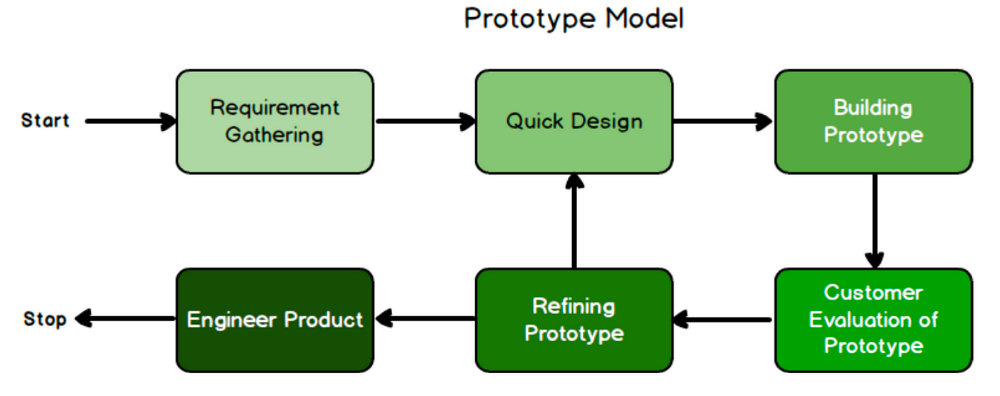

What is the Prototype Model?
The Prototyping Model is one of the most popularly used SDLC models. This model is used when the customers do not know the exact project requirements beforehand. In this model, a prototype of the end product is first developed, tested, and refined as per customer feedback repeatedly till a final acceptable prototype is achieved which forms the basis for developing the final product.
Phases in Prototype Model
- Requirements Analysis: This is the initial step in designing a prototype model. In this phase, users are asked about what they expect or what they want from the system.
- Quick Design: This is the second step in Prototyping Model. This model covers the basic design of the requirement through which a quick overview can be easily described.
- Build a Prototype: This step helps in building an actual prototype from the knowledge gained from prototype design.
- Initial User Evaluation: This step describes the preliminary testing where the investigation of the performance model occurs, as the customer will tell the strength and weaknesses of the design, which was sent to the developer.
- Refinig Prototype: If any feedback is given by the user, then improving the client’s response to feedback and suggestions, the final system is approved.
- Implement Product and Maintain: This is the final step in the phase of the Prototyping Model where the final system is tested and distributed to production, here the program is run regularly to prevent failures.

Advantages of the Prototype Model
- Reduce the risk of incorrect user requirement
- Good where requirement are changing/uncommitted
- Regular visible process aids management
- Support early product marketing
- Reduce Maintenance cost.
- Errors can be detected much earlier as the system is made side by side.
Disadvantages of the Prototype Model
- An unstable/badly implemented prototype often becomes the final product.
- Poor Documentation due to continuously changing customer requirements.
- Prototyping tools are expensive.
- It is a time-consuming process.
- Special tools & techniques are required to build a prototype.
- Easy to fall back into the code and fix without proper requirement analysis, design, customer evaluation, and feedback.
Example of Prototype Model
xample of developing a new mobile application for task management:
- Objective: Develop a task management mobile app
- Prototype Devlopment: Quickly create a basic version of the app with essential features like task creation and priority setting.
- Testing: Gather feedback from a small group of users to identify usability issues and refine functionality.
- Evaluation: Review feedback, refine requirements, and iterate on the prototype to improve user experience.
- Iteration: Repeat the process, adding new features and enhancements based on user feedback until the prototype meets stakeholders' needs.
- Finalization Develop a polished version of the app based on the final prototype, incorporating stakeholder approval and documentation.
In this example, the Prototype Model allows for rapid development and testing of a task management mobile application, enabling early validation of requirements, user feedback, and usability before investing in full-scale development.